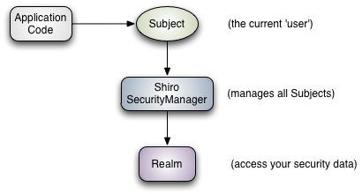

Apache Shiro（发音为shee-roh，日语堡垒（Castle）的意思）是一个强大易用的Java安全框架，提供了认证、授权、加密和会话管理功能，可为任何应用提供安全保障 - 从命令行应用、移动应用到大型网络及企业应用。相较于Spring Security来说较为简单，易于上手。
Apache Shiro有三个核心的概念Subject，SecurityManager和Realms，如下图所示：

1、Subject：主体，代表了当前“用户”，这个用户不一定是一个具体的人，与当前应用交互的任何东西都是Subject，如网络爬虫，机器人等，即一个抽象概念。所有Subject 都绑定到SecurityManager，与Subject的所有交互都会委托给SecurityManager。可以把Subject认为是一个门面，SecurityManager才是实际的执行者。
在shiro中通过org.apache.shiro.SecurityUtils类来获取Subject对象：
|
|
更多关于Subject的信息可访问http://shiro.apache.org/static/1.3.2/apidocs/org/apache/shiro/subject/Subject.html
2、SecurityManager：安全管理器，即所有与安全有关的操作都会与SecurityManager交互，且它管理着所有Subject，可以看出它是Shiro的核心。它负责与后边介绍的其他组件进行 交互，类似于Spring MVC中的DispatcherServlet前端控制器。
3、Realm：域，Shiro从Realm获取安全数据（如用户、角色、权限），就是说SecurityManager要验证用户身份，那么它需要从Realm获取相应的用户进行比较以确定用户身份是否合法。 也需要从Realm得到用户相应的角色/权限进行验证用户是否能进行操作。
简而言之，创建一个基本的Shiro应用过程为：
应用代码通过Subject来进行认证和授权，而Subject又委托给SecurityManager；
我们需要给Shiro的SecurityManager注入Realm，从而让SecurityManager能得到合法的用户及其权限进行判断。
Shiro并没有为我们提供Realm的实现，需要我们手动编写实现。基本过程为继承org.apache.shiro.realm.AuthorizingRealm抽象类，实现doGetAuthorizationInfo和doGetAuthenticationInfo方法。
了解了Shiro的核心组件后，接下来看看Shiro为我们带来了哪些功能模块：

Shiro提供了四大基本安全功能：认证，授权，会话管理和加密。
身份验证(Authentication)：也称为登录验证，即验证用户名和密码是否正确；
授权(Authorization)：根据用户的角色和权限来控制用户可访问的资源；
会话管理(Session Management)：即使在非Web或EJB应用程序中，也可以管理用户特定的SESSION会话；
密码学(Cryptography)：使用加密算法保证数据安全，同时易于使用。
除此之外，Shiro也支持以下特性：
Web支持(Web Support)：Shiro提供的web程序API可以帮助轻松保护Web应用程序；
缓存(Caching)：缓存可确保安全验证操作保持快速高效；
并发性(Concurrency)：Apache Shiro支持具有并发功能的多线程应用程序；
测试(Testing)：测试API帮助您编写单元测试和集成测试；
运行方式(Run As)：允许用户以别的用户身份（如果允许）登录；
记住我(Remember Me)：在会话中记住用户的身份，只有在强制登录时才需要登录。
参考自: